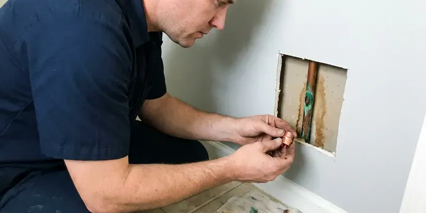

Underground Pipe Repair in Alexandria, LA
Locate, dig, repair, test. That is how Beau's Plumbing handles underground pipe repair in Alexandria, LA.
- Same-Day Locating
- Water, Sewer and Yard Lines
- Trenchless Options
- 811 Called on Every Job

Spinning Meter in Alexandria, LA?
Shut the meter valve if water is surfacing, and we will walk you through it on the phone.
Underground Pipe Repair in Alexandria, LA With Accurate Leak Location
Beau's Plumbing repairs water services, sewer laterals and buried lines to pools, sheds and guest houses. They all have weak points. Soil type, pipe depth and the material in the ground all change how we approach the job, so the first trip usually includes locating, digging and the repair. One crew handles all of it.
Our expertise includes:
- Pipe path tracing with tracer wire
- Main water service replacement from meter to house in PEX or copper
- Underground sewer lateral and cleanout repair to the property line

Additional Plumbing Repair Services in Alexandria, LA
We offer expert plumbing repair services across Alexandria, LA to fix leaks, restore flow, and keep your system running smoothly.


Customers
Why Choose Beau's Plumbing for Underground Pipe Repair in Alexandria, LA?
A failing service line rarely leaks just once. More leaks tend to follow. When we find old galvanized or polybutylene at the repair, we tell you straight whether a spot fix makes sense or whether the whole line is on borrowed time. The decision is yours.
- Right Materials, PEX or Type K copper for water, Schedule 40 PVC for sewer.
- Pressure Tested, Every repaired line is pressure tested before we backfill.
- Local Code, We work to Louisiana plumbing code for burial depth and approved materials.
Citywide Coverage
Properties with pools, guest houses and long irrigation runs have more buried pipe than most. Long runs fail more. We locate along the full length and keep notes on the route and depth so any future repair on that same line goes faster.
Experienced Team
The person who locates your leak is a plumber, not a salesperson. It changes the conversation. When they say a spot repair will hold, you are hearing from someone who fixes pipe for a living.
Safety-First Approach
Trenches deeper than five feet get shoring or a trench box, as federal rules require. Soil caves without warning. Our crew sets the protection before anyone climbs in, keeping dirt away from the edge so the trench holds.
Trusted Certified Alexandria Plumbing Services Professionals
At Beau's Plumbing, we are proud to offer certified plumbing services throughout Alexandria, LA. Those papers on the wall mean something. Our plumbers hold recognized industry credentials, and they follow strict safety and quality rules on every repair, installation and maintenance call we run.
Call Us Now PHCC Plumbing Contractor Recognition
PHCC Plumbing Contractor Recognition Better Business Bureau (BBB) Accreditation
Better Business Bureau (BBB) Accreditation Angi Certified Pro
Angi Certified Pro ISO 9001 Quality Management Certification
ISO 9001 Quality Management CertificationUnderground Pipe Repair Methods for Alexandria, LA Properties
Burst Main Line Repair in Alexandria, LA
A ruptured main can flood a yard or leave you with no water at all. Find the meter valve. We help you close the meter valve over the phone, then send a crew to locate and repair the break, while sorting out with the utility whether the leak is on their side. We keep you posted.

Buried Sewer Lateral Repair in Alexandria, LA
Buried laterals crack from roots, settling and age. Video locates the break. We excavate at the mark, cut out the damaged length and replace it with Schedule 40 PVC, using shielded transition couplings that match the old and new pipe. Fall gets checked before we close it.
Pipe Bursting Services in Alexandria, LA
Pipe bursting pulls a new pipe through the old one while breaking the old pipe outward. New pipe follows the old path. A bursting head on a cable splits clay, cast iron or brittle plastic, while a continuous HDPE pipe is pulled in behind at the same diameter or bigger. It works on badly damaged lines. Lining cannot do that.
Irrigation and Yard Line Repair in Alexandria
Sprinkler supply lines sit shallow and break easily. Landscapers hit them a lot. A broken irrigation main can run up a water bill fast in the growing season, so we repair PVC and poly mains, replace failed backflow connections and fix the supply line to the valve manifold. We can reroute lines away from trees.
Trenchless Underground Pipe Repair in Alexandria
Digging a trench across a mature yard is expensive to restore. Trenchless avoids most of it. We open small access pits at each end, then pull new pipe through the old path or line the old pipe in place, so the expense of putting the yard back together shrinks a lot. Faster, too.
Polybutylene Pipe Replacement in Alexandria
Polybutylene was used in a lot of homes built in the 1980s and early 1990s. It fails without warning. The gray plastic turns brittle as chlorine in the water attacks it, and buried runs tend to split at fittings or where the pipe was bent tight during installation. Replacement is the only lasting fix. We use PEX or copper.
Pool and Outbuilding Supply Line Repair in Alexandria, LA
Pool auto-fills, guest houses, outdoor kitchens and detached garages often have their own buried water lines. They are hard to trace. We use tracer wire, electronic locators and acoustic gear to find leaks along the full length, and repairs are made with direct-bury rated pipe and fittings, then pressure tested before we close up. Some lines get rerouted instead.

Underground Leak Detection & Repair in Alexandria, LA
Finding a buried leak takes the right tools. Digging blind costs money. We combine ground microphones, tracer gas and electronic pipe locating in Alexandria, LA, which together narrow the search to a small spot on the ground. Then we dig and repair.
Underground Pipe Repair Near Me in Alexandria, LA
Searching for underground pipe repair near me in Alexandria, LA usually means the water bill already jumped. The meter keeps running. Our crews arrive with locating gear and repair materials on the truck, which means the first trip usually ends with a mark on the ground and a price.
Most underground repairs in Alexandria are scheduled within a day or two of locating. Active leaks go first. Phone (504) 317-6869 with what you are seeing, and we will walk you through shutting off the water until the crew arrives.
Beau's Plumbing at a Glance
- Licensed and insured plumbers serving Alexandria, LA
- Same-day appointments and 24/7 emergency response
- Upfront, flat-rate pricing before work begins
- 4.8-star rated by 578+ Louisiana customers
Alexandria Map
Alexandria Information
- Population
- 43,466
- Area codes
- 318/337/225
- Service area
- Alexandria and communities within 40 miles
- Nearby
- Lafayette, Lake Charles, Monroe, Baton Rouge
Service lines in Alexandria, LA carry full street pressure through ground that moves, so a small leak rarely stays small. Around Alexandria, attic and crawlspace heat can speed up wear on supply lines, drain pans, and any plastic piping in those spaces.
Talk to a Plumber
Reach out to Beau's Plumbing for honest, reliable plumbing from people who know the trade in Alexandria, LA.
Our Specialized Plumbing Services in Alexandria, LA
At Beau's Plumbing, you get every kind of plumbing service from one company across Alexandria, LA. From leak detection to full system installs, our team works fast and charges fair prices on homes and commercial properties alike. Take a look at our core services below:


How an Underground Pipe Repair Goes in Alexandria, LA
No digging until you have a written price.
Book the Visit
Call (504) 317-6869 to set a time. We usually get out within a day.
Find the Leak
We trace the pipe and listen for the leak before any excavation. You see where it is.
Repair and Restore
We give you the options and price, make the repair, test it and restore the area.
Frequently Asked Questions About Underground Pipe Repair in Alexandria
A minor spot repair can start around $500. Full lines cost more. Trenchless full line replacements often run $3,000 to $10,000 or more, with pipe material, depth, length, the repair method and how much of the yard needs restoring setting most of the price. You get a written quote first.
Acoustic ground microphones pick up the sound of escaping water. Tracer gas helps too. Hydrogen-nitrogen gas pushed into the line rises through the soil at the leak, while a locator shows the pipe path for the survey. The mark is usually very close.
Yes, especially old clay and cast iron sewer pipe. They follow the water. Roots enter through hairline cracks and loose joints, then thicken every season until they block the pipe or split it open completely. Mature trees mean more risk. Cutting helps short term.
Less digging is the big one. Your lawn survives. Trenchless methods leave driveways, patios and established landscaping alone, and the savings on putting the yard back often cover the higher method price. Jobs usually finish sooner.
Main water service and sewer replacements usually do. Small fixes may not. The Alexandria building department typically wants a permit for any major buried line replacement, which allows an inspection before backfill. The permit is our job.
It gets worse and more expensive. Water erodes the ground. A leaking service can undermine a driveway, soak a foundation, grow mold in a crawlspace and run up the water bill every month, and a cracked sewer lateral can let sewage into the soil around your home. Early repair costs less.
Wet spots or extra-green grass are the classic signs. The water bill often tells you first. A sudden drop in pressure, a sewage or sulfur smell in the yard, or gurgling drains may mean a broken pipe underground on the supply or drain side. A turning meter confirms a leak.
Not for main lines or sewer laterals. It goes wrong easily. Digging near gas and electric lines, working in an unshored trench and using fittings not rated for burial all lead to injuries, repeat leaks or contaminated drinking water. Leave it to a pro.
Hear From Customers Who Hired Our Plumbing Experts

Nathan E.
Our tankless heater kept throwing an error code and shutting off mid shower. The tech flushed the heat exchanger, which was full of scale, and replaced a bad flow sensor. Hot water has been steady for half a year now.
Water Heater Repair · Bossier City, LA
Marcus H.
Grease from the fryer line kept clogging the kitchen drain at my diner. Beau's Plumbing hydro jetted the line after closing, showed me the buildup on camera, and set us up on a quarterly cleaning so it does not catch us on a Friday again.
Drain Cleaning · Alexandria, LA
Karen W.
After our third pinhole leak in copper, we stopped patching. Beau's Plumbing gave us a written plan room by room and repiped the house in PEX while we stayed in it. The crew covered our floors every morning and cleaned up every night.
Repiping · Lafayette, LA
Laura S.
Our 40 gallon tank started leaking from the bottom after thirteen years. The tech hauled the old one out, set a new unit with a fresh expansion tank, and had hot water running in about four hours. He took the old tank with him too.
Water Heater Replacement · Shreveport, LA
Mark T.
The floor drain in our office break room backed up every few weeks. The plumber ran a cable, then put a camera down and found roots at a joint about thirty feet out. Seeing it on the screen made the decision easy.
Drain Cleaning · Baton Rouge, LA
Lisa C.
Water was pouring out from under the washing machine on a holiday weekend. Beau's Plumbing talked me through closing the valves over the phone and had a plumber at the house within ninety minutes. It was a burst fill hose.
Emergency Plumbing · Bossier City, LA